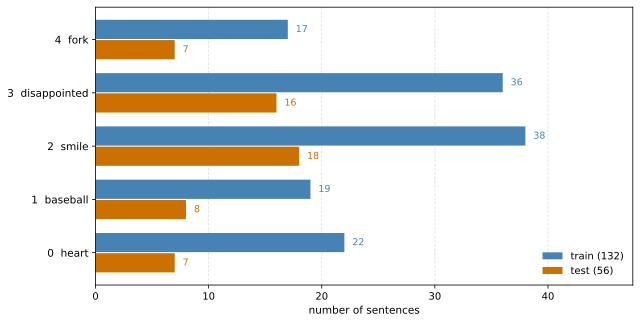
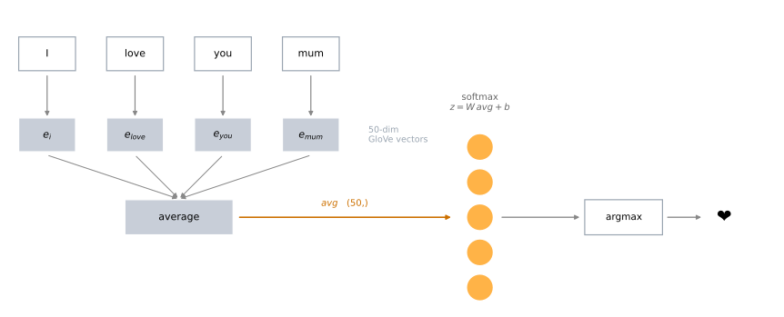
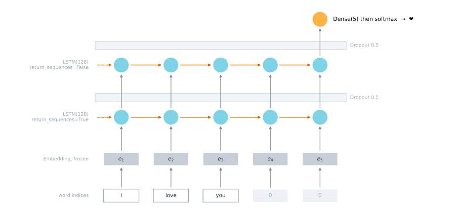
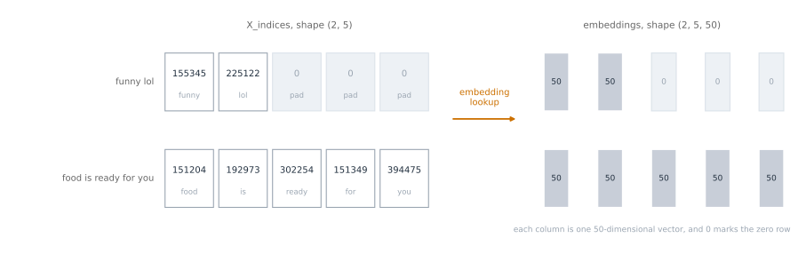
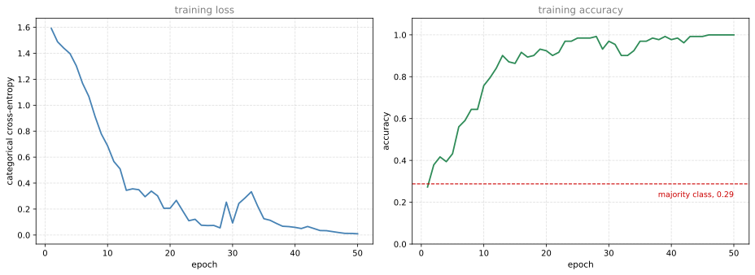

Build two emoji classifiers on 132 sentences, a softmax layer over averaged GloVe vectors and a two-layer LSTM with a frozen pretrained embedding.
Published
Wednesday, August 26, 2026
Sentiment Classification argued that a small labeled dataset is enough when the words themselves arrive pretrained, and it sketched two models. This lab builds both of them and measures the gap.
The task is to pick an emoji for a sentence. Give the model “Let us go see the baseball game tonight” and it should answer ⚾. There are five emoji to choose from and 132 training sentences, which is a tiny dataset by any standard. It works anyway, because the GloVe vectors of Pennington et al. (2014), loaded in the previous lab, already know that treasure is close to love, and that knowledge came from 6 billion tokens rather than from these 132 sentences.
By the end of this lab you will be able to
create an embedding layer in Keras initialized with pretrained word vectors,
build a sentiment classifier from word embeddings,
explain why padding is needed to train a sequence model in mini-batches,
build and train a more capable classifier using an LSTM,
state what averaging word vectors throws away, and see it cost the model an example.
Two models get built. Emojifier-V1 averages the word vectors of a sentence and pushes the average through a single softmax layer, written in NumPy with the gradients by hand. Emojifier-V2 feeds the word vectors into a two-layer LSTM in Keras, so that word order survives.
ImportantUpdated From the Original Assignment
The original assignment was written against TensorFlow 2.3, Keras 2, NumPy 1.x and the emoji package. Five changes were needed to run it on TensorFlow 2.21, Keras 3.15 and NumPy 2.4, made on 2026-08-26.
The emoji package is gone.emo_utils.label_to_emoji called emoji.emojize(":baseball:", use_aliases=True), and the use_aliases argument was removed in emoji 2.0. The whole dependency existed to convert five fixed alias strings into five characters, so the five characters are written out directly here instead. They were read off the original notebook’s own saved output, so they are the same glyphs the assignment produced.
int() on a one-element array is an error in NumPy 2.emo_utils.print_predictions calls label_to_emoji(int(pred[i])) where pred[i] has shape (1,). NumPy 1.25 deprecated that conversion and NumPy 2.0 raises TypeError: only 0-dimensional arrays can be converted to Python scalars. The indexing is explicit here.
The grader is stripped.test_utils.py and its comparator and summary helpers are gone, along with the five *_test functions and the assert type(cost) == np.float64 inside model. The grader’s import of tensorflow.python.keras.engine.functional would fail on Keras 3 in any case, since that module no longer exists, and summary reads layer.output_shape, which Keras 3 replaced with layer.output.shape.
The dataset is 132 training sentences, not 127. The notebook says 127 four times across three markdown cells, but data/train_emoji.csv as shipped has 132 rows, and the assignment’s own saved output confirms it. A training accuracy of 0.5454 is 72 out of 132, and Keras reports 5 mini-batches of 32. The figure 127 is not used anywhere in the code, so nothing downstream changes.
Emojifier-V1’s intermediate costs do not reproduce, and its test accuracy differs. This one needs an explanation of its own, and it gets one in the section where it happens. The short version is that the assignment’s optimizer is unstable by construction, so nudging the initial weights by the smallest amount a float64 can represent changes the cost printed at epoch 100 while leaving epoch 0 unchanged to four decimal places.
Every deterministic output below matches the original exactly. That covers the averaged vector for a sample sentence, the vocabulary indices, the padded index matrix, the embedding weights, and all three parameter counts in the V2 model summary. The epoch 0 training cost agrees to fifteen significant digits rather than exactly, for the reason given in the section where it is printed. The V1 costs after epoch 0 and everything Keras trains are not deterministic across environments, and both are discussed where they occur. The only other edit to reproduced code is the read_csv signature, which loses a default argument pointing at a path that does not exist on this site.
Packages
NumPy and Keras, plus pandas for the confusion matrix.
%config InlineBackend.figure_formats = ['svg']import osos.environ["TF_CPP_MIN_LOG_LEVEL"] ="3"# quieten TensorFlow's startup loggingimport csvimport numpy as npimport pandas as pdimport matplotlib.pyplot as pltimport tensorflow as tfimport kerasfrom tensorflow.keras.models import Modelfrom tensorflow.keras.layers import Dense, Input, Dropout, LSTM, Activation, EmbeddingDATA ="../../../media/deep-learning/emojify/"# The same GloVe file the previous lab used, byte for byte. It is not duplicated here.GLOVE ="../../../media/deep-learning/operations-on-word-vectors/data/glove.6B.50d.txt"print("TensorFlow", tf.__version__, "| Keras", keras.__version__, "| NumPy", np.__version__)
TensorFlow 2.21.0 | Keras 3.15.0 | NumPy 2.4.4
NoteLab Files Download
The sentences are tiny and hosted here. The word vectors are the same 171 MB file as the previous lab, so they live on Google Drive.
tesss.csv (1 KB), 56 labeled test sentences. The odd name is the assignment’s.
emojify_data.csv (5 KB), a 183-row companion set the lab never reads. It is not the pool the two splits were drawn from, since 5 training rows and 18 test rows do not appear in it and 132 plus 56 exceeds 183 in any case.
emo_utils.py (4 KB), the assignment’s helper module. This page does not import it, for the reasons in the callout above, but it is here for comparison.
Five more data files ship with the assignment and are read by nothing in the notebook. test_emoji.csv, tes.csv and tess.csv are near-duplicate 56-row test splits that differ from tesss.csv and from each other, and testing.csv is a tab-separated variant of the same. fake_glove.6B.50d.txt holds 15 two-dimensional toy vectors on a compass grid. Nothing in the notebook or its helpers reads it, and its entries overlap the map the tests build in Python, which this page reproduces inline as toy_map with 13 of the 15. All five are mirrored for completeness. test_utils.py is grader scaffolding and is deliberately not hosted.
Dataset EMOJISET
EMOJISET is a five-class classification problem. Each example is a sentence and an integer label from 0 to 4, and each label stands for one emoji.
The label-to-emoji mapping is where the original code needed its first repair. The assignment stored four of the five as alias strings such as :baseball: and called the emoji package to expand them, which is a dependency for five constants and no longer works as written. The characters go in directly.
EMOJI = {0: "❤️", # red heart, exactly the literal the assignment used for class 01: "⚾", # baseball2: "\U0001f604", # smiling face with smiling eyes3: "\U0001f61e", # disappointed face4: "\U0001f374"} # fork and knifedef label_to_emoji(label):"""Convert a label (int or string) into the emoji character it stands for."""return EMOJI[int(label)]print(" ".join(f"{k} = {v}"for k, v in EMOJI.items()))
0 = ❤️ 1 = ⚾ 2 = 😄 3 = 😞 4 = 🍴
Reading the data is two lines of csv. Column 0 is the sentence and column 1 is the label. The assignment’s own read_csv is reproduced below, with the shape of what it returns made visible. Its default argument of 'data/emojify_data.csv' is dropped, because that path is relative to the notebook and means nothing here, so the filename is always passed explicitly.
def read_csv(filename): phrase = [] emoji = []withopen(filename) as csvDataFile: csvReader = csv.reader(csvDataFile)for row in csvReader: phrase.append(row[0]) emoji.append(row[1]) X = np.asarray(phrase) Y = np.asarray(emoji, dtype=int)return X, YX_train, Y_train = read_csv(DATA +"data/train_emoji.csv")X_test, Y_test = read_csv(DATA +"data/tesss.csv")print("training sentences:", X_train.shape[0])print("test sentences: ", X_test.shape[0])
training sentences: 132
test sentences: 56
132 and 56. The notebook’s prose says 127 training sentences, but the file it ships has 132 rows and every number the assignment printed is consistent with 132. Nothing in the code reads the figure, so the discrepancy is cosmetic.
The longest sentence sets the length everything will be padded to later.
longest training sentence: 10 words
that sentence is: I am so excited to see you after so long
max takes a key argument that says what to compare on. Here the key is the word count, so max returns the sentence with the most words rather than the alphabetically last one, and wrapping the result in len(... .split()) turns that sentence back into its length.
Here are the first ten training examples with their emoji.
for idx inrange(10):print(X_train[idx], label_to_emoji(Y_train[idx]))
never talk to me again 😞
I am proud of your achievements 😄
It is the worst day in my life 😞
Miss you so much ❤️
food is life 🍴
I love you mum ❤️
Stop saying bullshit 😞
congratulations on your acceptance 😄
The assignment is too long 😞
I want to go play ⚾

Class balance in EMOJISET. The five classes are unevenly represented, and the training and test splits do not carry the same proportions, which matters when reading a single accuracy number.
The classes are not balanced. smile has 18 of the 56 test sentences and fork has 7, so a model that only learned to say smile would already score 32 percent. Random guessing across five classes scores 20 percent. Both are the floor to judge the numbers below against.
Baseline Model, Emojifier-V1
The first model is the simple averaging model from the theory page. Take the sentence, look up the GloVe vector for every word, average them into one 50-dimensional vector, and push that through a softmax layer with five outputs.

Emojifier-V1. Every word in the sentence is replaced by its 50-dimensional GloVe vector, the vectors are averaged into one, and a single softmax layer turns that average into five class probabilities. Nothing in the path is sensitive to the order of the words.
Loading the Word Vectors
The loader is the same one from the previous lab with two dictionaries added. Sorting the vocabulary and numbering it from 1 gives word_to_index, which Emojifier-V2 will need because a Keras embedding layer is indexed by integer, not by string. Index 0 is deliberately left unused, so that it can mean “padding” later.
def read_glove_vecs(glove_file):withopen(glove_file, 'r') as f: words =set() word_to_vec_map = {}for line in f: line = line.strip().split() curr_word = line[0] words.add(curr_word) word_to_vec_map[curr_word] = np.array(line[1:], dtype=np.float64) i =1# index 0 is reserved for padding words_to_index = {} index_to_words = {}for w insorted(words): words_to_index[w] = i index_to_words[i] = w i = i +1return words_to_index, index_to_words, word_to_vec_mapword_to_index, index_to_word, word_to_vec_map = read_glove_vecs(GLOVE)word ="cucumber"idx =289846print("the index of", word, "in the vocabulary is", word_to_index[word])print("the", str(idx) +"th word in the vocabulary is", index_to_word[idx])
the index of cucumber in the vocabulary is 113317
the 289846th word in the vocabulary is potatos
One-Hot Encoding the Labels
A softmax classifier compares its five output probabilities against a five-element target, so the integer labels have to become rows of five numbers with a single 1. np.eye(C) is the \(C \times C\) identity matrix, and indexing it by a label picks out the row that has its 1 in the right place.
def convert_to_one_hot(Y, C): Y = np.eye(C)[Y.reshape(-1)]return YY_oh_train = convert_to_one_hot(Y_train, C=5)Y_oh_test = convert_to_one_hot(Y_test, C=5)idx =50print(f"Sentence '{X_train[idx]}' has label index {Y_train[idx]}, "f"which is emoji {label_to_emoji(Y_train[idx])}")print(f"Label index {Y_train[idx]} in one-hot encoding format is {Y_oh_train[idx]}")
Sentence 'I missed you' has label index 0, which is emoji ❤️
Label index 0 in one-hot encoding format is [1. 0. 0. 0. 0.]
Averaging a Sentence
sentence_to_avg lowercases the sentence, splits it on whitespace, looks up each word, and averages whatever it finds. Words absent from GloVe are skipped, and the division is by the number of words actually found rather than by the number of words in the sentence, which is why count is tracked separately.
The shape of the zero vector comes from a word taken out of the map rather than from a hardcoded 50, so the same function works with any embedding size.
def sentence_to_avg(sentence, word_to_vec_map):""" Converts a sentence (string) into a list of words (strings). Extracts the GloVe representation of each word and averages its value into a single vector encoding the meaning of the sentence. Arguments: sentence -- string, one training example from X word_to_vec_map -- dictionary mapping every word in a vocabulary into its 50-dimensional vector representation Returns: avg -- average vector encoding information about the sentence, numpy-array of shape (J,) """# Get a valid word contained in the word_to_vec_map. any_word =next(iter(word_to_vec_map.keys())) words = sentence.lower().split() avg = np.zeros(word_to_vec_map[any_word].shape) count =0for w in words:if w in word_to_vec_map: # skip words GloVe has never seen avg += word_to_vec_map[w] count +=1if count >0: avg = avg / count # only if at least one word was foundreturn avg
The assignment checked this function with five assertions inside a test helper. Each one is a real property of the average, so they are computed and shown instead. The controlled map below is the same compass grid used in the previous lab, with words at known coordinates so that the correct average can be worked out by hand.
toy_map = {'a': [3, 3], 'synonym_of_a': [3, 3], 'a_nw': [2, 4], 'a_s': [3, 2],'c': [-2, 1], 'c_n': [-2, 2], 'c_ne': [-1, 2], 'c_e': [-1, 1],'c_se': [-1, 0], 'c_s': [-2, 0], 'c_sw': [-3, 0], 'c_w': [-3, 1],'c_nw': [-3, 2]}toy_map = {k: np.array(v) for k, v in toy_map.items()}print("shape follows the word vectors: ", sentence_to_avg("a a_nw c_w a_s", toy_map).shape,"vs", toy_map['a'].shape)print("mean of a, a_nw, c_w, a_s: ", sentence_to_avg("a a_nw c_w a_s", toy_map))print("same, with 'love' prepended: ", sentence_to_avg("love a a_nw c_w a_s", toy_map))print("a sentence of unknown words: ", sentence_to_avg("love", toy_map))print("six known words, two unknown: ", sentence_to_avg("c_se foo a a_nw c_w a_s deeplearning c_nw", toy_map))
shape follows the word vectors: (2,) vs (2,)
mean of a, a_nw, c_w, a_s: [1.25 2.5 ]
same, with 'love' prepended: [1.25 2.5 ]
a sentence of unknown words: [0. 0.]
six known words, two unknown: [0.16666667 2. ]
The four vectors a, a_nw, c_w and a_s average to [1.25, 2.5], which is what the second line prints. The third line prints the same thing, and that is the point of dividing by count. Adding the unknown word love changes the number of words in the sentence from four to five but not the number of words found, so dividing by len(words) would have shifted the answer to [1.0, 2.0] and quietly pulled every sentence toward the origin in proportion to how many rare words it contained. The fourth line shows the boundary case, where nothing was found and the guard on count returns zeros rather than dividing by zero.
The last line is the two rules working together on eight tokens. foo and deeplearning are absent from the map, so the six that remain are c_se, a, a_nw, c_w, a_s and c_nw, at \((-1,0)\), \((3,3)\), \((2,4)\), \((-3,1)\), \((3,2)\) and \((-3,2)\). Those sum to \((1, 12)\), and dividing by six rather than by eight gives \((0.1\overline{6}, 2.0)\), which is what prints.
Run it on a real sentence.
avg = sentence_to_avg("Morrocan couscous is my favorite dish", word_to_vec_map)print("avg = \n", avg)
where \(W\) is \(5 \times 50\), \(b\) has five entries, and \(Y_{oh}^{(i)}\) is the one-hot row for example \(i\). Because the label is one-hot, the sum in the loss has exactly one non-zero term, so the loss is the negative log of the probability the model assigned to the correct emoji.
The gradients are the standard softmax-with-cross-entropy result, and they are short enough to state. Writing \(dz^{(i)} = a^{(i)} - Y_{oh}^{(i)}\),
The reshape calls in the code turn \(dz\) into a \(5 \times 1\) column and \(avg\) into a \(1 \times 50\) row so that their product is the \(5 \times 50\) matrix \(W\) needs.
def softmax(x):"""Compute softmax values for each sets of scores in x.""" e_x = np.exp(x - np.max(x)) # subtract the max for numerical stabilityreturn e_x / e_x.sum()def model(X, Y, word_to_vec_map, learning_rate=0.01, num_iterations=400):""" Model to train word vector representations in numpy. Arguments: X -- input data, numpy array of sentences as strings, of shape (m,) Y -- labels, numpy array of integers giving the label values for the emojis, shape (m, 1) word_to_vec_map -- dictionary mapping every word in a vocabulary into its 50-dimensional vector representation learning_rate -- learning_rate for the stochastic gradient descent algorithm num_iterations -- number of iterations Returns: pred -- vector of predictions, numpy-array of shape (m, 1) W -- weight matrix of the softmax layer, of shape (n_y, n_h) b -- bias of the softmax layer, of shape (n_y,) """ any_word =next(iter(word_to_vec_map.keys())) m = Y.shape[0] # number of training examples n_y =len(np.unique(Y)) # number of classes n_h = word_to_vec_map[any_word].shape[0] # dimensions of the GloVe vectors# Initialize parameters using Xavier initialization W = np.random.randn(n_y, n_h) / np.sqrt(n_h) b = np.zeros((n_y,)) Y_oh = convert_to_one_hot(Y, C=n_y)for t inrange(num_iterations): cost =0 dW =0 db =0for i inrange(m): avg = sentence_to_avg(X[i], word_to_vec_map) z = np.dot(W, avg) + b a = softmax(z) cost +=-np.sum(Y_oh[i] * np.log(a)) dz = a - Y_oh[i] dW += np.dot(dz.reshape(n_y, 1), avg.reshape(1, n_h)) db += dz W = W - learning_rate * dW b = b - learning_rate * dbif t %100==0:print("Epoch: "+str(t) +" --- cost = "+str(cost)) pred = predict(X, Y, W, b, word_to_vec_map)return pred, W, b
predict runs the same forward pass over a whole set and reports accuracy. It is reproduced from the assignment’s helper module, which this page does not import.
def predict(X, Y, W, b, word_to_vec_map):""" Given X (sentences) and Y (emoji indices), predict emojis and compute the accuracy of your model over the given set. """ m = X.shape[0] pred = np.zeros((m, 1)) any_word =list(word_to_vec_map.keys())[0] n_h = word_to_vec_map[any_word].shape[0]for j inrange(m): words = X[j].lower().split() avg = np.zeros((n_h,)) count =0for w in words:if w in word_to_vec_map: avg += word_to_vec_map[w] count +=1if count >0: avg = avg / count Z = np.dot(W, avg) + b A = softmax(Z) pred[j] = np.argmax(A)print("Accuracy: "+str(np.mean((pred[:] == Y.reshape(Y.shape[0], 1)[:]))))return pred
400 passes over 132 sentences, in a Python loop.
np.random.seed(1)pred, W, b = model(X_train, Y_train, word_to_vec_map)
Look again at the inner loop. dW and db are set to zero once per epoch, outside the loop over examples, but W and b are updated once per example. So the update applied at example \(i\) uses the sum of the gradients from examples 0 through \(i\), not the gradient at example \(i\). The accumulator is never cleared between updates.
That is not stochastic gradient descent and it is not batch gradient descent. It is a hybrid that applies a growing sum of stale gradients, and it makes the trajectory chaotic. The demonstration takes one line.
def first_epochs(nudge, epochs=201):"""Rerun the first few epochs of training, optionally nudging W by one float64 step.""" np.random.seed(1) W = np.random.randn(5, 50) / np.sqrt(50)if nudge: W = np.nextafter(W, np.inf) # every weight moved to the very next float64 b = np.zeros((5,)) Y_oh = convert_to_one_hot(Y_train, C=5) out = {}for t inrange(epochs): cost =0 dW =0 db =0for i inrange(Y_train.shape[0]): avg = sentence_to_avg(X_train[i], word_to_vec_map) a = softmax(np.dot(W, avg) + b) cost +=-np.sum(Y_oh[i] * np.log(a)) dz = a - Y_oh[i] dW += np.dot(dz.reshape(5, 1), avg.reshape(1, 50)) db += dz W = W -0.01* dW b = b -0.01* dbif t %100==0: out[t] = costreturn outdef show(label, costs):print(label, " ".join(f"epoch {k}: {v:10.4f}"for k, v in costs.items()))np.random.seed(1)w0 = np.abs(np.random.randn(5, 50) / np.sqrt(50)).mean()print(f"typical weight magnitude {w0:.4f}, one float64 step there is {np.spacing(w0):.3e}\n")show("as initialized: ", first_epochs(False))show("nudged by 1 step:", first_epochs(True))
typical weight magnitude 0.1081, one float64 step there is 1.388e-17
as initialized: epoch 0: 410.4337 epoch 100: 47.8394 epoch 200: 32.5695
nudged by 1 step: epoch 0: 410.4337 epoch 100: 110.1965 epoch 200: 40.1173
np.nextafter(W, np.inf) moves every weight to the very next representable float64, a change of around \(1.4 \times 10^{-17}\) at these magnitudes. No smaller edit can be expressed in double precision at all. It leaves the cost at epoch 0 identical to four decimal places and roughly doubles the cost at epoch 100. The run is perfectly deterministic on any one machine, and it need not reproduce on another whose numerical stack differs in the last bit.
This is why the costs printed above match the original notebook’s at epoch 0 and at no epoch after it. The original printed 410.4337, 63.6126, 0.7391 and 0.3105 at epochs 0, 100, 200 and 300.
Epoch 0 agrees to fifteen significant digits, and not because it escaped the updates. It does not. The cost is summed as the loop runs, so 131 of its 132 terms come from weights that have already moved. What saves it is that one pass of 132 updates is not enough for the amplification to reach the fifteenth digit, while the more than 13,000 updates standing behind the epoch 100 figure are more than enough to reach the first. np.random.seed(1) still produces bit-identical initial weights, since the legacy generator is frozen, so the two runs start from the same place and separate gradually. The likeliest source of the initial difference is a change in how NumPy orders the summations inside np.dot, though this page does not isolate it and does not need to. A last-bit difference from any cause can produce the same picture.
What does survive is the destination. Training accuracy reaches 1.0 either way, and the test accuracy lands one example apart from the original.
NoteWhat the Loop Should Have Said
Clearing the accumulators inside the example loop turns it into ordinary stochastic gradient descent, which is what the surrounding comments describe.
for i inrange(m): avg = sentence_to_avg(X[i], word_to_vec_map) a = softmax(np.dot(W, avg) + b) cost +=-np.sum(Y_oh[i] * np.log(a)) dz = a - Y_oh[i] dW = np.dot(dz.reshape(n_y, 1), avg.reshape(1, n_h)) # assignment, not accumulation db = dz W = W - learning_rate * dW b = b - learning_rate * db
The assignment’s version is kept on this page because it is what produced the published outputs, and because it converges regardless. It is worth knowing which one you are copying.
Training set:
Accuracy: 1.0
Test set:
Accuracy: 0.8928571428571429
Around 89 percent on sentences it has never seen, from 132 training examples and a model with 255 parameters. Random guessing scores 20 percent and always answering smile scores 32 percent, so the word vectors are carrying almost all of the weight here. They were trained on 6 billion tokens, and this lab is renting that.
The clearest evidence is a word the model never saw.
X_my_sentences = np.array(["i treasure you", "i love you", "funny lol","lets play with a ball", "food is ready", "today is not good"])Y_my_labels = np.array([[0], [0], [2], [1], [4], [3]])pred = predict(X_my_sentences, Y_my_labels, W, b, word_to_vec_map)print()for i inrange(X_my_sentences.shape[0]):print(X_my_sentences[i], label_to_emoji(int(pred[i, 0])))
Accuracy: 0.8333333333333334
i treasure you ❤️
i love you ❤️
funny lol 😄
lets play with a ball ⚾
food is ready 🍴
today is not good 😄
treasure does not appear anywhere in the training set, and “i treasure you” still gets a heart. Nothing taught the model about that word. GloVe placed treasure near love because the two appear in similar contexts across the corpus, the average of the sentence therefore lands near the average of “i love you”, and the softmax layer had already learned that region of the space means heart. That is the whole argument for pretrained embeddings on a small dataset, running end to end in one line of output.
The last sentence is the failure. “today is not good” gets a smile. The model does see not, since GloVe has a vector for it and that vector goes into the average like any other. What it cannot see is where not sits. Averaging is symmetric in its arguments, so the vector for “today is not good” is exactly the vector for “good is not today” and for every other arrangement of those four words. A linear layer reading that average can learn that the presence of not shifts the answer somewhat, which is a blunt instrument, and it can never learn what the word is negating. Here good pulls the average toward the smile region and wins.
Confusion Matrix
Accuracy compresses 56 predictions into one number. A confusion matrix keeps the detail, showing for each true class how often the model answered each of the five.
Emojifier-V1 on the 56 test sentences. Rows are the true class and columns are the prediction, so everything on the diagonal is correct and every off-diagonal cell is a mistake.
The mistakes are not spread evenly. Read across the disappointed row and the smile column and you find the model calling unhappy sentences happy, which is the same failure “today is not good” showed. Sentences that carry a negation, or that are unhappy in a wordy way, average out to something the model reads as positive.
NoteWhat You Should Remember
With 132 training examples you can still get a reasonably good model, because the word vectors did the hard part on a corpus a million times larger.
Word embeddings let a model handle test words that never appeared in training, which is what treasure demonstrated.
Averaging discards word order completely, so “not good” and “good not” are the same input.
What that costs is scope rather than vocabulary. The model can learn that not matters on average, and it can never learn which word not applies to, however much data it is given.
Read a small accuracy number against the majority-class baseline, not against zero.
Review Questions
1. The model never saw the word treasure during training, yet it labels “i treasure you” with a heart. Where did that ability come from?
Answer
From GloVe, not from this lab. The 132 training sentences taught the softmax layer that a certain region of the 50-dimensional space means heart, and they taught it using sentences containing love, adore and similar words. GloVe had already placed treasure near love, because the two words appear in similar contexts across the 6 billion token corpus it was fit to. So the average vector for “i treasure you” lands in the region the softmax layer already labeled, without a single training example ever containing the word. The 255 parameters trained here contribute the mapping from regions to emoji, and the 20 million frozen numbers in GloVe contribute the geometry that makes those regions meaningful.
1. sentence_to_avg divides by count rather than by len(words). What would break if it divided by len(words)?
Answer
Every sentence containing a word GloVe does not know would be shrunk toward the origin, in proportion to how many unknown words it had. The printed check shows it directly. a a_nw c_w a_s averages to [1.25, 2.5], and prepending the unknown word love leaves that unchanged under count but would give [1.0, 2.0] under len(words). Since the softmax layer reads the direction and magnitude of the average, that shrinkage is a systematic distortion that has nothing to do with what the sentence means. It would also make the model’s behavior depend on GloVe’s coverage of proper nouns and typos, which is not a property of the task.
1. Why does the cost at epoch 0 match the original notebook to fifteen significant digits while the cost at epoch 100 does not?
Answer
Not because epoch 0 avoids the updates, which is the tempting answer and the wrong one. The cost is accumulated as the loop runs, so all but the first of its 132 terms use weights that have already moved. What matters is how far the two runs have drifted apart by the time each number is printed. np.random.seed(1) gives both runs bit-identical initial weights, since the legacy generator is frozen for exactly this reason, and the training loop then amplifies whatever difference appears rather than damping it, because it applies an accumulated sum of gradients that is never cleared. After one pass of 132 updates the gap is still below the fifteenth significant digit. After the more than 13,000 that precede epoch 100 it has reached the first. The experiment above shows that amplification directly, without needing a second machine, by moving every initial weight to the next representable float64 and watching epoch 100 change while epoch 0 does not.
Emojifier-V2, Using LSTMs in Keras
Emojifier-V1 fails on negation because it never sees a sequence. The fix is the RNN model from the theory page. Feed the word vectors into an LSTM one at a time, so the hidden state carries what came before, and take the class from the final state.
The embeddings stay pretrained and stay frozen. With 132 training sentences there is no hope of improving 20 million embedding numbers, and every attempt would be overfitting.

Emojifier-V2, a two-layer LSTM sequence classifier. The bottom row is the padded index sequence, the embedding layer turns each index into a 50-dimensional vector, the first LSTM returns a value at every step, and the second returns only its final state, which a dense layer maps to five class scores.
Keras and Mini-Batching
Most deep learning frameworks require every sequence in a mini-batch to have the same length. That is what makes vectorization possible. A three-word sentence takes three LSTM steps and a four-word sentence takes four, and those two computations cannot be run as one batched operation.
The standard answer is padding. Pick a maximum length, then pad every sequence out to it with a reserved index that means “nothing here”. Under maxLen = 10, the sentence “I love you” becomes the index sequence for those three words followed by seven zeros, and the embedding lookup turns each of those zeros into the all-zero vector, because row 0 of the embedding matrix was never filled in. Any sentence longer than the maximum would have to be truncated, and picking the longest training sentence as the maximum is what avoids that here.
Be careful about what the zero row does and does not buy. It guarantees that every padded position presents the same content-free input, rather than some arbitrary word’s vector. It does not cause those positions to be skipped. Keras has a mask_zero=True option on Embedding that would make the recurrent layers ignore them, and the assignment does not use it, so both LSTMs run over all ten steps for every sentence. A padded step still advances the hidden and cell states through the recurrent weights and biases, and since the second LSTM hands its final state to the classifier, that state is read after the padding rather than at the last real word.
Embedding Layer
In Keras the embedding matrix is a layer. Its input is an integer matrix of shape (batch size, max length), and its output has shape (batch size, max length, embedding dimension). Nothing is computed. The layer is a lookup table, and the “weights” are the GloVe vectors arranged one per row.

Two sentences through the embedding layer, padded to a length of 5. The layer maps each integer to the row of the embedding matrix at that index, turning a 2 by 5 matrix of indices into a 2 by 5 by 50 array of vectors. Index 0 maps to the all-zero row, so every padded position presents the same content-free input, though without mask_zero the LSTMs still process it.
Preparing the Input Sentences
sentences_to_indices turns an array of sentences into the integer matrix the embedding layer wants. It allocates a zero matrix of the right shape first, so every position that never gets written stays 0 and is therefore already padding.
The counter j is incremented only when a word is found, rather than being taken from enumerate. That is deliberate. An unknown word is skipped without leaving a gap, so “food is xyzzy ready” packs into three consecutive positions rather than leaving a zero in the middle that the LSTM would read as a pad.
def sentences_to_indices(X, word_to_index, max_len):""" Converts an array of sentences (strings) into an array of indices corresponding to words in the sentences. The output shape should be such that it can be given to `Embedding()`. Arguments: X -- array of sentences (strings), of shape (m,) word_to_index -- a dictionary containing the each word mapped to its index max_len -- maximum number of words in a sentence Returns: X_indices -- array of indices corresponding to words in the sentences from X, of shape (m, max_len) """ m = X.shape[0] X_indices = np.zeros((m, max_len))for i inrange(m): sentence_words = X[i].lower().split() j =0for w in sentence_words:if w in word_to_index: X_indices[i, j] = word_to_index[w] j = j +1return X_indices
The assignment tested this against a hand-built eight-word vocabulary. The expected matrix is worth reading rather than asserting, because three of its four rows are edge cases.
tiny_index = {val: idx +1for idx, val inenumerate(["i", "like", "learning", "deep", "machine", "love", "smile", "´0.="])}sentences = np.array(["I like deep learning", "deep ´0.= love machine","machine learning smile", "$"])print(sentences_to_indices(sentences, tiny_index, max_len=4))
Row 1 shows the lookup is case insensitive, since “I” matched the key i. Row 2 shows a punctuation-only token counts as a word when the vocabulary happens to contain it. Row 3 is a three-word sentence padded out to four. Row 4 is a sentence whose only token is absent from the vocabulary, and it comes back as all padding, which is the same thing the model would see for an empty string.
Run it on the real vocabulary and the same three cases appear at full scale.
X1 = np.array(["funny lol", "lets play baseball", "food is ready for you"])X1_indices = sentences_to_indices(X1, word_to_index, max_len=5)print("X1 =", X1)print("X1_indices =\n", X1_indices)
X1 = ['funny lol' 'lets play baseball' 'food is ready for you']
X1_indices =
[[155345. 225122. 0. 0. 0.]
[220930. 286375. 69714. 0. 0.]
[151204. 192973. 302254. 151349. 394475.]]
Building the Embedding Layer
pretrained_embedding_layer builds the lookup table. The vocabulary has 400,000 words at indices 1 through 400,000, and the matrix needs one more row for index 0, so vocab_size is len(word_to_index) + 1. That extra row is left as zeros and is the padding vector.
trainable=False is what freezes it. build((None,)) allocates the weights before they can be assigned, which set_weights then does.
def pretrained_embedding_layer(word_to_vec_map, word_to_index):""" Creates a Keras Embedding() layer and loads in pre-trained GloVe 50-dimensional vectors. Arguments: word_to_vec_map -- dictionary mapping words to their GloVe vector representation. word_to_index -- dictionary mapping from words to their indices in the vocabulary Returns: embedding_layer -- pretrained layer Keras instance """ vocab_size =len(word_to_index) +1# row 0 is the padding vector any_word =next(iter(word_to_vec_map.keys())) emb_dim = word_to_vec_map[any_word].shape[0] # 50# Step 1: one row per vocabulary entry, all zeros to start emb_matrix = np.zeros((vocab_size, emb_dim))# Step 2: write each word's GloVe vector into its own rowfor word, idx in word_to_index.items(): emb_matrix[idx, :] = word_to_vec_map[word]# Step 3: a lookup table that gradient descent will not touch embedding_layer = Embedding(input_dim=vocab_size, output_dim=emb_dim, trainable=False)# Step 4: allocate the weights, then set them to the matrix just built embedding_layer.build((None,)) embedding_layer.set_weights([emb_matrix])return embedding_layerembedding_layer = pretrained_embedding_layer(word_to_vec_map, word_to_index)print("weights[0][1][1] =", embedding_layer.get_weights()[0][1][1])print("Input_dim ", embedding_layer.input_dim)print("Output_dim", embedding_layer.output_dim)
That single number is a useful check. Row 1 of the embedding matrix is the first word in sorted order, and element 1 of its vector is 0.39031, which is the value the original assignment printed.
Building Emojifier-V2
The architecture is the figure above, in eight lines. Note the two return_sequences settings. The first LSTM has to hand a value to the second at every time step, so it returns the whole sequence. The second feeds a classifier that wants one vector for the whole sentence, so it returns only its final state.
def Emojify_V2(input_shape, word_to_vec_map, word_to_index):""" Function creating the Emojify-v2 model's graph. Arguments: input_shape -- shape of the input, usually (max_len,) word_to_vec_map -- dictionary mapping every word in a vocabulary into its 50-dimensional vector representation word_to_index -- dictionary mapping from words to their indices in the vocabulary Returns: model -- a model instance in Keras """# indices are integers, so the input dtype is int32 rather than the usual float sentence_indices = Input(shape=input_shape, dtype='int32') embedding_layer = pretrained_embedding_layer(word_to_vec_map, word_to_index) embeddings = embedding_layer(sentence_indices)# a value at every time step, because another LSTM consumes them X = LSTM(128, return_sequences=True)(embeddings) X = Dropout(0.5)(X)# one vector for the whole sentence, because a classifier consumes it X = LSTM(128, return_sequences=False)(X) X = Dropout(0.5)(X) X = Dense(5)(X) X = Activation('softmax')(X) model = Model(inputs=sentence_indices, outputs=X)return modeltf.keras.utils.set_random_seed(1) # Python, NumPy and TensorFlow generatorsmodel = Emojify_V2((maxLen,), word_to_vec_map, word_to_index)model.summary()
Look at the parameter split. Of 20,223,927 parameters, 20,000,050 are the frozen embedding, which is \(400{,}001 \times 50\). Only 223,877 are trainable, and those are the two LSTMs and the dense layer. So a model that looks like it has 20 million parameters is really a 224,000-parameter model sitting on top of a large fixed lookup table, which is the only reason 132 training sentences are enough to fit it.
Convert the sentences to padded index matrices and the labels to one-hot rows, then fit.
X_train_indices = sentences_to_indices(X_train, word_to_index, maxLen)Y_train_oh = convert_to_one_hot(Y_train, C=5)print("X_train_indices.shape =", X_train_indices.shape)print("Y_train_oh.shape =", Y_train_oh.shape)history = model.fit(X_train_indices, Y_train_oh, epochs=50, batch_size=32, shuffle=True, verbose=0)print("final training loss = %.4f"% history.history['loss'][-1])print("final training accuracy = %.4f"% history.history['accuracy'][-1])
X_train_indices.shape = (132, 10)
Y_train_oh.shape = (132, 5)
final training loss = 0.0094
final training accuracy = 1.0000

Emojifier-V2 over 50 epochs on 132 sentences. Both curves are training-set only, since the dataset is too small to hold out a validation split, so the flattening at the top right says the model has fitted the training data and says nothing about generalization.
The original notebook says to expect somewhere between 80 and 95 percent, and it reported 89.3 percent. This page lands inside that band. The number moves from run to run and from machine to machine, because Keras seeds and cuDNN kernel selection are not reproducible the way np.random.seed is, and because 56 test sentences means one example is worth 1.8 percentage points. Treat any single figure here as approximate.
The sentences it gets wrong are more informative than the number.
pred = model.predict(X_test_indices, verbose=0)for i inrange(len(X_test)): num = np.argmax(pred[i])if num != Y_test[i]:print("Expected "+ label_to_emoji(Y_test[i]) +" predicted "+ label_to_emoji(num) +" :: "+ X_test[i].strip())
Expected 😞 predicted ❤️ :: This girl is messing with me
Expected 😞 predicted 😄 :: work is horrible
Expected 🍴 predicted 😄 :: any suggestions for dinner
Expected 😄 predicted ❤️ :: you brighten my day
Expected 😄 predicted ❤️ :: will you be my valentine
Expected 😞 predicted ⚾ :: go away
Expected 🍴 predicted ❤️ :: I did not have breakfast
Finally, the sentence Emojifier-V1 could not do.
for sentence in ['not feeling happy', 'today is not good', 'i treasure you', 'I cannot play']: indices = sentences_to_indices(np.array([sentence]), word_to_index, maxLen)print(sentence, label_to_emoji(np.argmax(model.predict(indices, verbose=0))))
not feeling happy 😞
today is not good 😄
i treasure you ❤️
I cannot play ⚾
“not feeling happy” comes back disappointed. Averaging is not barred from that answer, since the bag of not, feeling and happy has an average like any other and a linear layer could map it to the disappointed class. What averaging is barred from is telling that sentence apart from “happy feeling not”, because the two produce the same vector. The LSTM reads not first and carries its effect in the hidden state, so happy arrives in a context that has already been negated, and the two orderings are no longer the same input.
Do not read too much into it. The training set has almost no examples of negation, so the model has not learned a general rule about the word not. It has learned something narrower that happens to cover this phrase. A larger training set is what would turn that into a real capability, and the architecture is the part that makes the capability possible at all.
NoteWhat You Should Remember
When an NLP training set is small, pretrained word embeddings do most of the work, and the trained model on top can be small.
Word embeddings let a model handle test words that never appeared in training.
Mini-batching a sequence model requires padding, because every sequence in a batch must be the same length.
A Keras Embedding() layer is a lookup table that can be initialized from pretrained vectors, and trainable=False freezes them.
With a small labeled dataset, freezing is usually the right call, since fine-tuning 20 million embedding numbers on 132 sentences is overfitting by another name.
return_sequences=True hands a value to the next layer at every time step, return_sequences=False hands over only the final state.
Review Questions
1. The embedding matrix has 400,001 rows for a 400,000-word vocabulary. What is the extra row, and what would break without it?
Answer
Row 0 is the padding vector, and it is deliberately left as zeros. read_glove_vecs numbers the vocabulary from 1 precisely so that index 0 stays free, and sentences_to_indices allocates a zero matrix so that every unwritten position already holds 0. Without the extra row the vocabulary would have to start at index 0, some real word would own it, and every padded position in every short sentence would be silently fed that word’s vector. Short sentences would be read as if they ended with a run of repetitions of whichever word happened to sort first.
1. The model reports 20,223,927 parameters but only 223,877 trainable ones. Where did the other 20 million go, and why is the split necessary here?
Answer
They are the embedding matrix, \(400{,}001 \times 50 = 20{,}000{,}050\) numbers, and they are excluded from training by trainable=False. The split is what makes the lab possible. Fitting 20 million parameters to 132 labeled sentences would be hopeless, and the resulting embeddings would be worse than the ones GloVe fit to 6 billion tokens. Freezing them means gradient descent only has to find 223,877 numbers, which is the two LSTMs and the dense layer, and even that is a lot for 132 examples. The dropout at 0.5 after each LSTM is the other half of the answer to that problem.
1. Both LSTM layers have 128 units, yet the first has 91,648 parameters and the second has 131,584. Why are they different?
Answer
Because an LSTM’s parameter count depends on the width of its input as well as its own width. Each of the four gates holds a weight matrix over the concatenation of the incoming vector and the previous hidden state, plus a bias, so the count is \(4 \times 128 \times (\text{input width} + 128 + 1)\). The first layer receives 50-dimensional embeddings, giving \(4 \times 128 \times 179 = 91{,}648\). The second receives the first layer’s 128-dimensional output, giving \(4 \times 128 \times 257 = 131{,}584\). Neither count depends on the number of time steps, because the same weights are reused at every step, which is the defining property of a recurrent layer.
1. Emojifier-V1 cannot tell “not feeling happy” apart from “happy feeling not”, and Emojifier-V2 can. Is that because the LSTM learned what the word not means?
Answer
No, and the distinction matters. What changed is that the architecture can now represent an order-dependent function at all. Averaging is symmetric, so Emojifier-V1 gives those two sentences the same vector and is structurally incapable of separating them, no matter how much data it sees. That is a limit on scope rather than on vocabulary, since the average does contain not and a linear layer can learn that its presence matters. An LSTM reads the words in sequence, so not can influence how happy is interpreted. Whether this model actually learned to do that is a question about the data, and 132 training sentences contain almost no negation, so it has more likely learned a narrow association that happens to cover this phrase. The right conclusion is that V2 made the capability possible and a larger dataset would be needed to realize it.
Acknowledgments
The assignment credits Alison Darcy and the Woebot team for advice on its design. Woebot is a conversational agent for mental health, and part of its technology uses word embeddings to interpret what a user says, which is the same idea this lab applies to a much smaller problem.
References
Pennington, J., Socher, R., & Manning, C. (2014). GloVe: Global vectors for word representation. In Proceedings of the 2014 Conference on Empirical Methods in Natural Language Processing (EMNLP) (pp. 1532-1543). Association for Computational Linguistics. https://doi.org/10.3115/v1/D14-1162